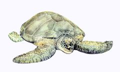

Chelonia mydas
| Tortuga verde | |
|---|---|
|  | |
| Riesgo de extinción | |
 En peligro (UICN) | |
| Clasificación científica | |
| Reino: | Animalia |
| Filo: | Chordata |
| Clase: | Reptilia |
| Orden: | Testudines |
| Familia: | Cheloniidae |
| Género: | Chelonia |
| Especie: | Chelonia mydas |
| Nombre binomial | |
|
Chelonia mydas Linnaeus, 1758 | |
| Distribución | |
|
Mapa de distribución de Chelonia mydas Mapa de distribución de Chelonia mydas | |
{kind=link}
Contenido
Información de Evaluación
- Categoría y Criterio Regional: En Peligro A2acd
- Fecha de Evaluación Regional: 2015
- Evaluadores: Jesús Morales-Campos y Ariany García-Rawlins
- Categoría y Criterio Global: En Peligro A2bd
Justificación
Evaluaciones Previas
1999: En Peligro (EN)
2008: En Peligro (EN)
Información General
Nombres comunes
Tortuga verde, tortuga blanca, tortuga, tartaruga verde, green turtle, tortue verte.
Notas taxonómicas
Sinónimos
Descripción
Chelonia mydas es la tortuga más grande de la familia Cheloniidae. Tiene la cabeza pequeña y redondeada anteriormente, de unos 15 cm de ancho (Pritchard y Trebbau 1984), y el pico córneo aserrado. En el Atlántico occidental las hembras adultas pueden medir más de 120 cm de longitud y pesar más de 150 kg (Pritchard y Mortimer 2000, Lagueux 2001). En Isla de Aves se han medido hembras de hasta 138 cm de longitud del caparazón y pesos superiores a los 235 kg (Brownell y Guzmán 1974, Fudena 2015). Su caparazón muestra tonalidades diversas en adultos, de marrón oscuro a casi negro, con listas o motas oscuras y cuatro pares de escudos laterales o costales; en las extremidades posee una uña en cada aleta (Pritchard y Mortimer 2000). Los adultos mantienen una dieta en lo fundamental herbívora, constituida por fanerógamas marinas y macroalgas e incluso invertebrados (Bjorndal 1997, Jones, T. y Seminoff 2013).
Distribución
La especie se encuentra en todos los mares tropicales del mundo. La mayor colonia anidadora del Caribe es Tortuguero (Costa Rica). En Venezuela anida desde Falcón hasta Delta Amacuro y en casi todas las islas (Pritchard 1982, Pritchard y Trebbau 1984, Buitrago B. 1987b, Medina et al. 1987, Guada y Vernet P. 1988a, Guada y Vernet P. 1988b, Solé y Narciso 1995, Guada et al. 1998, Guada 2000, Guada y Solé 2000, De los Llanos 2002, García-Cruz 2002, Gallardo 2007, Guevara C. 2008, Arias O. y Vernet P. 2009, Vernet P. et al. 2009, González Rivero 2010, Cisnero 2011, Pulgar H. et al. 2011, Vernet P. y Arias-Ortiz 2011, Vernet P. et al. 2011, Cisnero y Guada 2013, Pulgar H. et al. 2013, Rondón-Médicci 2013a, Vernet P. et al. 2013, H. J. Guada y F. J. Velásquez obs. pers.). El área de cortejo, apareamiento y desove más importante del país es el refugio de fauna silvestre Isla de Aves (Pritchard y Trebbau 1984, Medina et al. 1987, Guada y Solé 2000, Vera et al. 2008, García-Cruz et al. 2013b, García-Cruz 2015). Las principales áreas de alimentación se encuentran en el golfo de Venezuela, la península de Paraguaná, los parques nacionales Morrocoy y Mochima, el golfo de Paria y en todas las islas (Pritchard y Trebbau 1984, Medina et al. 1987, Guada y Vernet P. 1988a, Solé y Narciso 1995, Solé 1997, Guada 2000, Guada y Solé 2000, Parra Montes de Oca 2002, Barrios-Garrido y Montiel-Villalobos 2003, Montiel-Villalobos y Barrios-Garrido 2008, Barreto-Betancur 2009, Pulgar H. et al. 2011, Rondón-Médicci 2013a, Rondón-Médicci 2013b, Velásquez 2014). El golfo de Venezuela es crucial para el forrajeo de juveniles y subadultos de todo el Caribe y adultos que desovan en Tortuguero e Isla de Aves (Pritchard y Trebbau 1984, Guada y Solé 2000, Montiel-Villalobos 2012). Después de anidar, se dirigen hacia diferentes lugares de alimentación, como lo evidencian decenas de recapturas de tortugas de Isla de Aves en diecinueve países (Pritchard y Trebbau 1984, Solé 1994, Parra Montes de Oca 2002, Vera 2004a).
- Sistema: Terrestre, Marino
- Bioregión:
- Intervalo altitudinal (m): Temporalmente sin información
- Endémica: No
Situación
En Isla de Aves se estimó una disminución de la colonia anidadora en un 90% desde 1879 (Seminoff 2004). Entre los años cincuenta y setenta anidaban decenas de hembras diariamente, sin embargo, el saqueo de las nidadas y la captura de hembras por parte de pescadores de las Antillas (Harris 1958, Parsons 1962, Antczak et al. 2007), redujeron la población a unas 300-500 hembras/año (Pritchard y Trebbau 1984, Solé y Narciso 1995, Guada et al. 1998, Guada y Solé 2000, Vera 2004b, Rondón-Médicci 2013a, J. Buitrago obs. pers.). El establecimiento de una base científico-naval en 1978 redujo la extracción de manera considerable, y se estimó el número de hembras reproductivas entre 344 y 1439 (Peñaloza 2000). El seguimiento entre 2001-2002 y 2005-2008 produjo un estimado de 1500-1800 hembras anuales (Vera y Buitrago B. 2012). Estudios demográficos recientes indican que la población ha estado creciendo durante los últimos 30 años, estimando un número de 1283 hembras en el 2009 (95% CI = 1213-1352) (García-Cruz et al. 2015), lo cual comparado con la información disponible del siglo XIX, hace razonable suponer un declive de 80% desde entonces (García-Cruz et al. 2013a). El índice de abundancia en la zona de mayor extracción de tortugas en el golfo de Venezuela fue de 1,21±0,21 tortugas/km-red*hora, valor mayor que para cualquier otra localidad del Caribe (Montiel-Villalobos 2012). Considerando que tres generaciones de la tortuga verde son equivalentes a aproximadamente ~106,5-148,5 años (Seminoff 2004), en Venezuela se reconoce que está En Peligro Crítico, según el criterio A2bd (UICN 2012a), por las cifras de Isla de Aves y al aprovechamiento de esta especie en sus áreas de alimentación en el Caribe. Sin embargo, dada la alta conectividad de sus poblaciones con las de otros países y la posibilidad de recolonización en caso de una extinción local, se ajustó a la categoría En Peligro (UICN 2012b). A nivel internacional se clasifica En Peligro (IUCN 2014).
- EOO (km2): Temporalmente sin información
- AOO (km2): Temporalmente sin información
- Tendencia Poblacional: Decreciendo
Amenazas
Desde el siglo XVI la principal causa de la reducción drástica de las poblaciones de tortuga verde ha sido la comercialización de sus productos (Harris 1958, Parsons 1962, Pritchard y Trebbau 1984, Lagueux 2001), disminuyendo la población caribeña a solo una fracción de lo que era en 1500 (McClenachan et al. 2006, McClenachan 2007). En algunos sitios, la captura intencional fue la principal fuente de mortalidad, destacando el golfo de Venezuela donde se estima la extracción en 3649 ± 434 tortugas/año (Pritchard y Trebbau 1984, Medina et al. 1987, Parra Montes de Oca 2002, Montiel-Villalobos 2012) para comercio y usos culturales de la etnia Wayúu (Parra Montes de Oca 2002, Barrios-Garrido y Montiel-Villalobos 2006, Montiel-Villalobos 2012) y en la cual perecen hembras que luego anidarían en Isla de Aves (Montiel-Villalobos 2012). Otra causa de mortalidad importante es la captura incidental en las redes de ahorque o de enmalle de los pescadores artesanales (Medina et al. 1987, Guada 2000, Guada y Solé 2000, Parra Montes de Oca 2002, Rojas, D. et al. 2011, González Viloria et al. 2013, Rondón-Médicci 2013b, Balladares 2014). Los varamientos de tortuga verde entre 2008 y 2013 la ubican entre un mínimo de 14,28% (n=3) y un máximo de 27,7% (n=5) del total observado (Balladares 2014). La ocupación rural, urbana, industrial o turística de las zonas costeras, ha afectado la disponibilidad de áreas de anidación (Medina et al. 1987, Guada y Solé 2000). Aún en Isla de Aves, problemas como el exceso de iluminación, inciden en el desove de la especie (Vera y Buitrago B. 2012). Se han reportado fibropapilomas en diferentes localidades del país, aunque la tasa de infección es baja comparada con otras áreas en el mundo (Pritchard 1982, Guada et al. 1991, Solé y Azara 1995, Guada y Solé 2000, Vale-Echeto y Bracho 2000, Montiel-Villalobos et al. 2008, H. J Guada obs. pers.).
Conservación
Existen diversos instrumentos legales nacionales e internacionales que le confieren protección (Guada y Vernet P. 1992b, Guada et al. 1998, Guada y Solé 2000, Babarro 2004). Isla de Aves fue declarada refugio de fauna silvestre en 1972, por su importancia para la especie (Gremone y Gómez 1984, Guada y Solé 2000, Buitrago B. et al. 2008, J. Buitrago obs. pers.). La supervivencia anual estimada para Isla de Aves es de 0.79, la cual es baja comparada con otras poblaciones en el Caribe. Esto apoya las sugerencias previas de que en el Caribe las poblaciones de tortuga verde han recibido un mayor impacto que en otros lugares del mundo (García-Cruz et al. 2015). El análisis del ADN mitocondrial de cuatro de las principales colonias de reproducción de tortuga verde en el Atlántico, indica que las hembras de Isla de Aves conforman una unidad de manejo poblacional distinta (Shamblin et al. 2012). Análisis recientes con ADN mitocondrial demuestran que los machos de tortuga verde de Isla de Aves son idénticos genéticamente a las hembras que allí anidan, y que son igualmente filopátridos a esta zona de apareamiento, lo cual indica que las tortugas verdes de Isla de Aves son una población aún más aislada de lo que se pensaba (García-Cruz et al. 2015). Los patrones migratorios y el uso de hábitat fueron estudiados recientemente para esta población (García-Cruz 2015). Con apoyo de la Armada, el Ministerio del Poder Popular para Ecosocialismo y Aguas efectúa el seguimiento en Isla de Aves. Existen proyectos de investigación, capacitación y educación ambiental que inciden en su conocimiento y conservación, y este espacio no permite reflejarlos a todos. Un fondo para proyectos de conservación apoyó investigaciones sobre la especie (Giraldo Hernández et al. 2009). Es prioritario reforzar la vigilancia y el control en áreas de anidación y alimentación, investigar y disminuir la captura y la mortalidad incidental en las pesquerías artesanales y divulgar el estatus de sus poblaciones a lo largo de la costa y zonas insulares, con énfasis en el golfo de Venezuela; asimismo, es indispensable hacer seguimiento del efecto de la extracción en el golfo sobre las poblaciones anidadoras de Venezuela y el Caribe. Estos retos requieren aportes financieros significativos. Deberían estimarse los efectos potenciales del cambio climático en sus hábitats de anidación y alimentación.
Autorías
Autores originales
Joaquín Buitrago (†), Vicente J. Vera, Marco Antonio García-Cruz, María Gabriela Montiel-Villalobos, Kathryn M. Rodríguez-Clark, Héctor Barrios-Garrido, Claudia L. Peñaloza, Hedelvy J. Guada y Genaro Solé
Colaboradores
Ilustrador
Ximenamaria Rausseo
Referencias
- Antczak A, J. Buitrago, M. Mackowiak de Antczak, & H.J. Guada. 2007. A Contribution to the History of Marine Turtles Exploitation in Venezuela. 59th Gulf and Caribbean Fisheries Institute:63-73.
- Arias O., A.O. & P.D. Vernet P. 2009. Evaluación de la situación actual de las poblaciones de tortugas marinas en las zonas de alimentación y anidación en el Archipiélago Los Testigos, Dependencia Federal. Pp: 151. En: Giraldo, D., Rojas-Suárez, F. & V. Romero (eds.). Una Mano a la Naturaleza, Conservando las Especies Amenazadas Venezolanas. Provita y Shell Venezuela, S.A. Caracas, Venezuela.
- Babarro, R. 2004. Marco legal relativo a la conservación de las tortugas marinas en Venezuela. Pp:27-45. En: Tortugas Marinas en Venezuela: Acciones para su Conservación. Oficina Nacional de Diversidad Biológica, Dirección de Fauna, Ministerio del Ambiente (MARN). Fondo Editorial FUNDAMBIENTE. 117 pp.
- Balladares, C. (Compilador). 2014. Base de datos de varamientos de tortugas marinas en Venezuela. Oficina Nacional de Diversidad Biológica, Ministerio del Poder Popular para el Ambiente, Venezuela.
- Barreto B., Y. A. 2009. Identificación de sitios prioritarios para la conservación de ecosistemas marino-costeros de isla La Blanquilla, Dependencia Federal. Pp:46. En: Giraldo, D., Rojas-Suárez, F. & V. Romero (eds.). Una Mano a la Naturaleza, Conservando las Especies Amenazadas Venezolanas. Provita y Shell Venezuela, S.A. Caracas, Venezuela.
- Barrios-Garrido, H. & M.G. Montiel-Villalobos. 2003. Present status of the green turtle (Chelonia mydas) in the Gulf of Venezuela. Pp:257. En: J.A. Seminoff (compilador). Proceedings of the Twenty-second Annual Symposium on Sea Turtle Biology and Conservation, Myrtle Beach, South Carolina, USA, NOAA Technical Memorandum NMFS-SEFSC-503.
- Barrios-Garrido, H. & M.G. Montiel-Villalobos. 2006. The sea turtles in the magical-religious beliefs of the Wayúu indigenous people. Pp:189. En: N.J. Pilcher (compilador). Proceedings of the Twenty-third Annual Symposium on Sea Turtle Biology and Conservation, Kuala Lumpur, Malasia, NOAA Technical Memorandum NMFS-SEFSC-536.
- Bjorndal, K. A. 1997. Foraging ecology and nutrition of sea turtles, Pp:199-231. En: The Biology of Sea Turtles (P. L. Lutz y J. A. Musick, editores). CRC Press. Boca Raton. 432 p.
- Brownell, W. & C. Guzmán. 1974. Ecología de Isla de Aves con especial referencia a los peces. Mem. Soc. Cienc. Nat. La Salle 34:91-168.
- Buitrago B., J. 1987. Observaciones sobre la anidación de tortugas marinas en Los Roques (Venezuela) y evaluación de medidas para su protección. An. Inst. Inv. Mar. Punta de Betín 17:137-153.
- Buitrago, J., H.J. Guada & E. Doyle. 2008. Conservation science in developing countries: an inside perspective on the struggles in sea turtle research and conservation in Venezuela. Env. Science & Policy 11(6):562-578
- Buitrago, J., Vera, V. J., García-Cruz, M. A., Montiel-Villalobos, M. G., Rodríguez-Clark, K. M., Barrios-Garrido, H., Peñaloza, C. L., Guada, H. J. y Solé, G. (2015). Tortuga verde, Chelonia mydas. En: J.P. Rodríguez, A. García-Rawlins y F. Rojas-Suárez (eds.) Libro Rojo de la Fauna Venezolana. Cuarta edición. Provita y Fundación Empresas Polar, Caracas, Venezuela. Recuperado de: animalesamenazados.provita.org.ve/content/tortuga-verde Jue, 12/04/2018 - 11:52
- Cisnero, M.J. 2011. Evaluación de las áreas de anidación de tortugas marinas registradas en el Parque Nacional Morrocoy en la temporada 2010. Tesis de Grado. Departamento de Biología, Facultad de Ciencias y Tecnología (FACYT), Universidad de Carabobo. 85 pp.
- Cisnero, M. J. & H.J. Guada. 2013. Seguimiento de la anidación de tortugas marinas en el Parque Nacional Morrocoy, estado Falcón, temporada 2012. Informe Técnico. Centro de investigación y conservación de tortugas marinas. Pp:636. En: X Congreso Venezolano de Ecología. Libro de Resúmenes. Ediciones IVIC. 204 pp
- De los Llanos, V. 2002. Evaluación de la situación de las poblaciones de tortugas marinas en el Parque Nacional Archipiélago de los Roques. Tesis de Licenciatura. Universidad Central de Venezuela, Caracas, Venezuela.
- García C., M. A. Demografía, genética y epibiontes asociadas a la población de tortuga verde (Chelonia mydas) que se reproduce en Isla de Aves, Venezuela. Tesis doctoral en elaboración. IVIC. Altos de Pipe.
- Giraldo, D., F. Rojas-Suárez & V. Romero (eds.). 2009. Una Mano a la Naturaleza, Conservando las Especies Amenazadas Venezolanas. Provita y Shell Venezuela, S.A. Caracas, Venezuela.
- Gremone, C. & J.L. Gómez. 1984. Isla de Aves como área de desove de la tortuga verde Chelonia mydas. FUDENA. Editorial Arte. Caracas. 57 pp.
- FUDENA, base de datos Isla de Aves
- Gallardo, A. 2007. Importancia de las playas al este del Estado Vargas para la anidación de las tortugas marinas. Tesis de Licenciatura. Universidad Central de Venezuela. Caracas.
- García Cruz, M., M. Lampo, C.L. Peñaloza, G. Solé & K. Rodríguez-Clark. 2013. Population trends and survivorship of nesting green sea turtles on Isla de Aves, Venezuela. Pp: 222-223. En: Tucker, T., L. Belskis, A. Panagopoulou, A. Rees, M. Frick, K. Williams, R. LeRoux, and K. Stewart. (compiladores). Proceedings of the Thirty-Third Annual Symposium on Sea Turtle Biology and Conservation. NOAA Technical Memorandum NOAA NMFS-SEFSC-645: 263 p.
- García Cruz, M., J. Medina, V. de los Llanos, R. van Dam, M. Lampo, J. Mavárez & K. Rodríguez-Clark. 2013. Catching male green turtles (Chelonia mydas) near Isla de Aves, Venezuela. Pp:178-179. En: Tucker, T., Belskis, L., Panagopoulou, A., Rees, A., Frick, M., Williams, K., LeRoux, R. & Stewart, K. (compiladores). 2013. Proceedings of the Thirty-Third Annual Symposium on Sea Turtle Biology and Conservation. NOAA Technical Memorandum NOAA NMFS-SEFSC-645. 263 p
- González R., M. F. 2010. Actividad de anidación de tortugas marinas en el sector Nor-occidental del Parque Nacional Morrocoy en el estado Falcón. Trabajo Especial de Grado. Escuela de Biología. Universidad Central de Venezuela. Caracas, Venezuela. 119 pp.
- González Viloria, G., R. Parra V., K. Urdaneta, S. Galué, D.C. Rojas C. & L. Valero-Barrios. 2013. Pp:637. Conocimiento local sobre tortugas marinas en la comunidad pesquera de Isla de Toas, estado Zulia. Resúmenes. X Congreso Venezolano de Ecología. Ediciones IVIC.
- Guada, H.J. 2000. Áreas de anidación e impactos hacia las tortugas marinas en la península de Paria y recomendaciones de protección. Trabajo de Grado para optar al Título de Magister en Ciencias Biológicas. Universidad Simón Bolívar, Caracas. xix + 228 p.
- Guada, H.J. & G. Solé. 2000. WIDECAST Plan de Acción para la Recuperación de las Tortugas Marinas de Venezuela (A. Suárez, ed.). Informe Técnico del PAC N° 39. Kingston, Jamaica: UNEP Caribbean Environment Programme. xiv + 112 p.
- Guada, H.J., V. Vera, E. Yerena, P. Vernet & H. Cuenca. 1998. Monitoring of wildlife in the National Parks of Venezuela: the sea turtles as study case. Pp:65-66. En: Byles, R. e Y. Fernandez (compiladores). Proceedings of the 16th Annual Symposium on Sea Turtle Biology and Conservation. NOAA Tech. Memo. NMFS-SEFSC-412. Miami, Florida, USA.
- Guada, H.J. & P. Vernet. 1988a. Situación actual de las tortugas marinas en la costa caribeña de Venezuela: Estado Falcón. Informe Técnico. FUDENA, Caracas, Venezuela. 25 p + mapas.
- Guada, H. J. & P. Vernet P. 1992. The sea turtle conservation in the Laguna de Tacarigua National Park, Venezuela. Marine Turtle Newsletter 56:7-8.
- Guada, H. & P. Vernet. 1988b. Situación actual de las tortugas marinas en la costa caribeña de Venezuela. Estados Anzoátegui y Sucre. Informe. Caracas: Fudena. 24 p. + mapas.
- Guada, H. J., P. Vernet P., M. de Santana, A. Santana & E. Marín de Aguilar. 1991. Fibropapillomas in a green turtle captured off Peninsula de Paraguana, Falcon State, Venezuela. Marine Turtle Newsletter 52:24.
- Guevara C., C. A. 2008. Áreas de anidación y amenazas a las tortugas marinas en las zonas norte y oeste de la península de Macanao. Tesis de Licenciatura. Universidad de Oriente, Núcleo Nueva Esparta. Boca del Río. Estado Nueva Esparta. xv + 132 pp.
- Jones, T. & J. Seminoff. 2013. Feeding biology. Advances from field-based observations, physiological studies, and molecular techniques. Pp:211-247. En: The Biology of Sea Turtles (J. Wyneken, K.J. Lohmann, J.A. Musick, editores). Volume III. CRC Press. 457 p.
- Lagueux, C.J. 2001. Estado de conservación y distribución de la tortuga verde, Chelonia mydas, en la región del Gran Caribe. Pp:34-42. En: K.L. Eckert & F.A.Abreu-Grobois (eds.). Conservación de las tortugas marinas en la región del Gran Caribe: Un diálogo para el manejo regional efectivo. (Traducción al español R. Briseño Dueñas y F.A. Abreu Grobois). WIDECAST, UICN/CSE Grupo Especialista en Tortugas Marinas (MTSG), WWF y el Programa Ambiental del Caribe del PNUMA. xx + 170 p.
- McClenachan, L., J.B.C. Jackson & M.J.H. Newman. 2006. Conservation implications of historic sea turtle nesting beach loss. Frontiers in Ecology and the Environment 4(6):290-296.
- McClenachan, L. 2007. Historic decline of green and hawksbill turtle populations in the Caribbean Pp:82. En: Mast R.B., B.J. Hutchinson, A.H. Hutchinson (Compilers). Proceedings of the Twenty-Fourth Annual Symposium on Sea Turtle Biology and Conservation. NOAA Technical Memorandum NMFS-SEFSC-567. 205 pp.
- Medina G., B. Álvarez, J. Buitrago & H. Molero. 1987. Tortugas marinas en la costa caribeña venezolana. Informe preparado para el II Simposio de las Tortugas del Atlántico Occidental (STAO/WATS). 53 p.
- Montiel-Villalobos, M.G. 2012. Efecto de la extracción artesanal de la tortuga verde (Chelonia mydas) en el Golfo de Venezuela: Conexiones entre hábitats de alimentación y áreas de anidación reveladas por ADN mitocondrial. Tesis de Doctorado. Instituto Venezolano de Investigaciones Científicas (IVIC). Caracas, Venezuela. 140 pp.
- Montiel-Villalobos, M.G. & H. Barrios-Garrido. 2008a. Geographic distribution of the sea turtles in the Gulf of Venezuela. Pp:141. En: R. B. Mast., B.J. Hutchinson, A.H. Hutchinson (compiladores). Proceedings of the Twenty-fourth Annual Symposium on Sea Turtle Biology and Conservation. NOAA Technical Memorandum NOAA NMFS-SEFSC-567. 205 pp.
- Montiel-Villalobos, M.G., H. Barrios-Garrido & L. Rivero. 2008b. New report of fibropapillomatosis in a subadult of green turtle in the Gulf of Venezuela. Pp:24. En: A. F. Rees, M. Frick, A. Panagopoulou & K. Williams (compiladores). Proceedings of the Twenty-seven Annual Symposium on Sea Turtle Biology and Conservation, Myrtle Beach, South Carolina, USA, NOAA Technical Memorandum NMFS-SEFSC-569.
- Parra Montes de Oca, L. I. 2002. Diagnóstico de la situación actual de las poblaciones de tortugas marinas en la costa occidental del Golfo de Venezuela, Estado Zulia. Tesis de Grado. La Universidad del Zulia, Maracaibo (Venezuela). 154 pp.
- Parsons, J. 1962. The Green Turtle and Man. Univ. of Florida Press, Gainesville. 126 pp.
- Peñaloza, C. 2000. Demografía y viabilidad de la población de tortuga verde, Chelonia mydas, en Isla de Aves, Venezuela. Tesis de Licenciatura, Universidad Simón Bolívar, Sartenejas, Venezuela.
- Pritchard, P.C.H., 1982. Turtles of the Spanish Main. Florida Audubon Society, 24 pp.
- Pritchard, P. & J. Mortimer. 2000. Taxonomía, morfología externa e interna de las especies. Pp:23-41. En: Eckert, K.L., K.A. Bjorndal, F.A. Abreu-Grobois y M. Donnelly (eds.). Técnicas de investigación y manejo para la conservación de las tortugas marinas. Grupo Especialista en Tortugas Marinas UICN/CSE.
- Pritchard, P.C.H. & P. Trebbau. 1984. The Turtles of Venezuela. Contributions to Herpetology, Number 2. Society for the Study of Amphibians and Reptiles. Ann Arbor, Michigan. 468 p.
- Pulgar H., E., M.F. González Rivero, C. Fischer & H.J. Guada. 2011. Nuevas localidades de anidación de tortugas marinas en el estado Aragua y actividades de conservación realizadas durante la temporada 2010. Pp:294. En: IX Congreso Venezolano de Ecología. Libro de Resúmenes.
- Pulgar H., E., H.J. Guada, C. Fischer & M. Cisnero. 2013. Anidación de tortugas marinas en el estado Aragua y actividades de seguimiento para su conservación durante las temporadas 2011 y 2012. Pp:270. En: X Congreso Venezolano de Ecología. Libro de Resúmenes. Ediciones IVIC.
- Rodríguez, J. P. y Rojas-Suárez, F. (1999). Libro Rojo de la Fauna Venezolana, segunda edición. PROVITA, Fundación Polar. Caracas. 444 pp.
- Rodríguez, J. P. y Rojas-Suárez, F. (Eds.) (2008). Libro Rojo de la Fauna Venezolana, tercera edición. Provita y Shell Venezuela, S. A. Caracas, Venezuela. 364 pp.
- Rojas, D., L. Carruyo, J. Reverol, J. Palmar, N. Espinoza & H. Barrios-Garrido. 2011. Registro preliminar de tortugas marinas sacrificadas en la localidad de Kasusain, Alta Guajira venezolana. pp:304. En: IX Congreso Venezolano de Ecología. Libro de Resúmenes.
- Rondón-Médicci, M. 2013. Varamientos y mortalidad de las tortugas marinas en la península de Paraguaná entre los años 2010 y 2013. IV Congreso de Biodiversidad. Punto Fijo, Venezuela. Junio, 2013
- Rondón-Médicci, M. Registro de las áreas de desove de las tortugas marinas en la Península de Paraguaná, Estado Falcón. Ciencia. 21(3) (Jul-Sep). En prensa.
- Shamblin, B. M., K.A. Bjorndal, A.B. Bolten, Z.M. Hillis-Starr, I. Lundgren, E. Naro-Maciel & C.J. Nairn. 2012. Mitogenomic sequences better resolve stock structure of southern Greater Caribbean green turtle rookeries. Molecular Ecology:2330-2340
- Solé, G. 1992. Isla de Aves: un refugio para la Tortuga verde. Profauna 2:19-20
- Solé, G. 1994. Migration of the Chelonia mydas population from Aves Island, Pp:283-286. En: K.A. Bjorndal, A.B. Bolten, D.A. Johnson & P.J. Eliazar (Compiladores). Proceedings of the Fourteenth Annual Symposium on Sea Turtle Biology and Conservation NOAA Technical Memorandum. NMFS-SEFSC-351.
- Solé, G. 1997. Seguimiento de las poblaciones de la tortuga verde Chelonia mydas y valoración de su hábitat en el Parque Nacional Mochima. Pp:227-233. En: Ciencia y conservación en el Sistema de Parques Nacionales de Venezuela. (I. Novo Torres, L. G. Morales, C. T. Rodríguez, G. Martínez, I. De Hertelendy, editores). Impresos Altamira S. A. Caracas.
- Solé, G. & C.E. Azara. 1995. Presencia de fibropapilomas en las tortugas verdes (Chelonia mydas) de Isla de Aves. Memorias XLV Convención Anual de ASOVAC. Acta Cient. Venez. 46(Sup.):212.
- Solé, G. & S. Narciso. 1995. Conservación de las poblaciones de tortugas marinas del Refugio de Fauna Silvestre de Cuare y del Parque Nacional Morrocoy. Informe interno de FUDENA.
- Seminoff, J. 2004. Marine Turtle Specialist Group Green Turtle Assessment. The World Conservation Union (IUCN), Species Survival Commission. Red List Program. Washington, USA.
- UICN. 2001. Categorías y Criterios de la Lista Roja de la UICN: Versión 3.1. Comisión de Supervivencia de Especies de la UICN. UICN, Gland, Suiza y Cambridge, Reino Unido. ii + 33 pp.
- Vale-Echeto, O. & A.E. Bracho. 2000. Fibropapillomas in a green sea turtle (Chelonia mydas): gross and microscopic changes in a case captured in the Península of Paraguana, Falcón State, Venezuela. Revista Científica - Facultad de Ciencias Veterinarias 10:367-371.
- Velásquez, F. 2014. Desoves de Tortugas Marinas en algunas localidades del Estado Sucre. Informe Técnico. Cumaná. Estado Sucre. 15 pp.
- Vera, V. 2004a. Updating migratory movements of green turtle (Chelonia mydas) population from Aves Island Wildlife Refuge, Venezuela. Pp:88. En: R.B. Mast., B.J. Hutchinson, A.H. Hutchinson (compiladores). Proceedings of the Twenty-fourth Annual Symposium on Sea Turtle Biology and Conservation. NOAA Technical Memorandum NOAA NMFS-SEFSC-567. 205 pp.
- Vera, V. 2004b. Proyecto de seguimiento y conservación de la tortuga verde (Chelonia mydas) en el Refugio de Fauna Silvestre Isla de Aves, Dependencias Federales. Pp:55-61. En: R. Babarro, A. Sanz & B. Mora (eds.). Tortugas Marinas en Venezuela: Acciones para su Conservación. Oficina Nacional de Diversidad Biológica, Dirección de Fauna, Ministerio del Ambiente (MARN). Fondo Editorial FUNDAMBIENTE. 117 pp.
- Vera, V., V. De los Llanos & R. Lazo. 2008. Is Aves Island Wildlife Refuge the most important sea turtle courtship and mating area in the Caribbean? Pp:67-68. En: A. F. Rees, M. Frick, A. Panagopoulou & K. Williams (compiladores). Proceedings of the Twenty-seven Annual Symposium on Sea Turtle Biology and Conservation, Myrtle Beach, South Carolina, USA, NOAA Technical Memorandum NMFS-SEFSC-569.
- Vera, V. & J. Buitrago. 2012. Actividad reproductiva de Chelonia mydas (Testudines: Cheloniidae) en Isla de Aves, Venezuela (2001-2008). Rev Bio Tropical: Int. J. Trop. Biol. 60(2): 745-758
- Vernet P., P. & A. Arias-Ortiz. 2011. Las tortugas marinas en la Isla La Tortuga: monitoreo y conservación. Pp:172. En: IX Congreso Venezolano de Ecología. Libro de Resúmenes.
- Vernet P., P., A. Quintero, J. Rodríguez & A. Arias-Ortiz. 2009. Conservación de tortugas marinas en nuevas localidades de anidación en la franja costera aledañas Complejo Petroquímico Morón, Estado Carabobo. Pp:394. En: VIII Congreso Venezolano de Ecología. Libro de Resúmenes.
- Vernet P., P., A. Quintero & J. Rodríguez. 2011. Manejo, conservación y seguimiento de las poblaciones de tortugas marinas en la franja costera del Complejo Petroquímico Morón, Estado Carabobo. Pp:553. En: IX Congreso Venezolano de Ecología. Libro de Resúmenes.
- Vernet P., P.; J. Rodríguez, M. Barreat, J. Abdouche & A. Quintero. 2013. Conservación y seguimiento a las poblaciones de tortugas marinas en las costas del estado Carabobo, Venezuela. Pp:634. En: X Congreso Venezolano de Ecología. Libro de Resúmenes. Ediciones IVIC. 204 pp